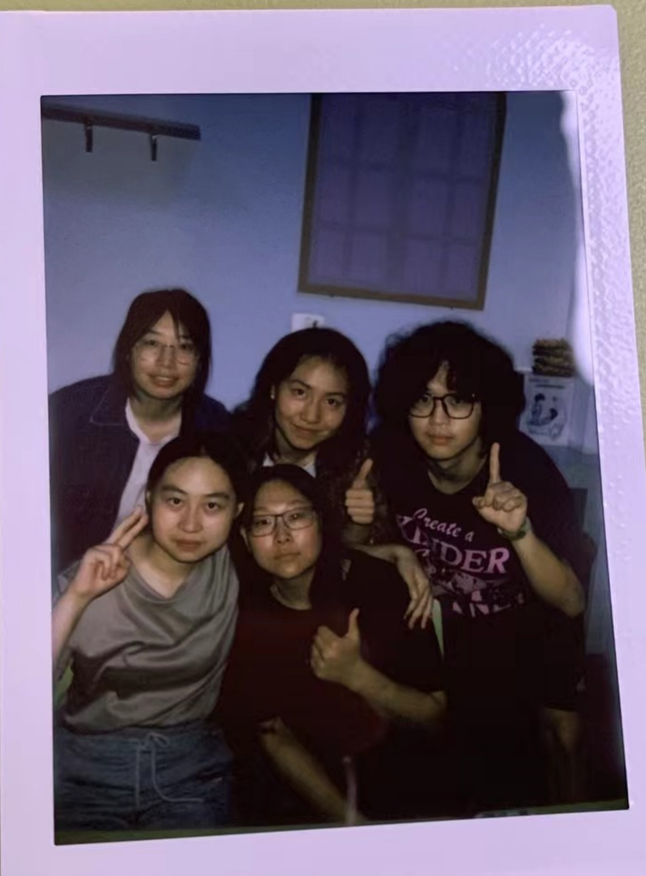
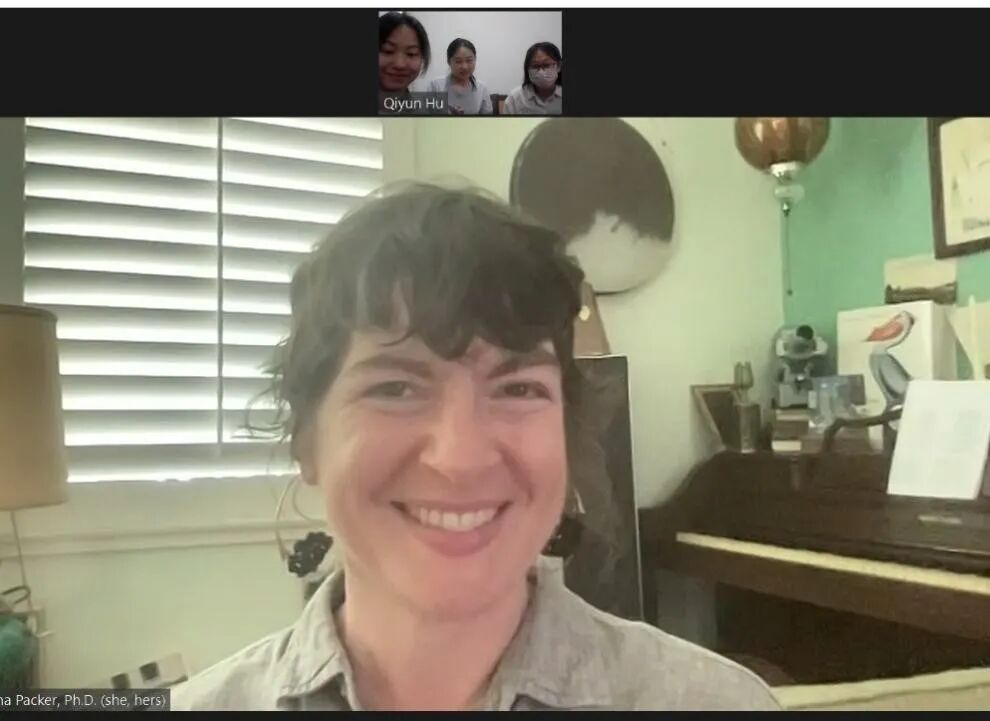
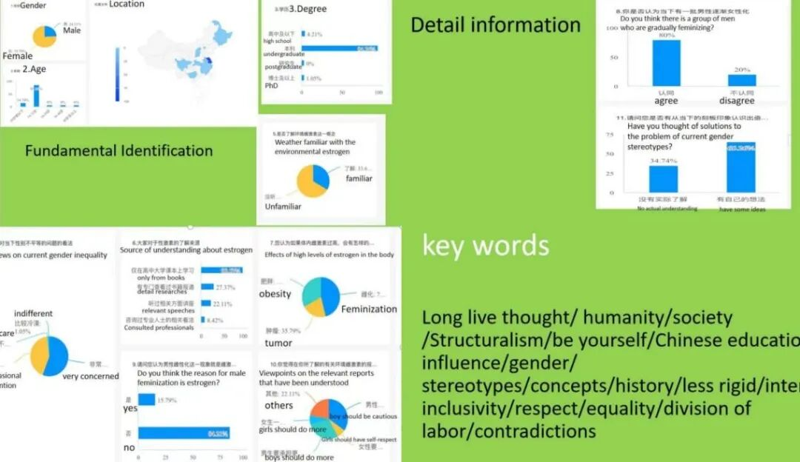
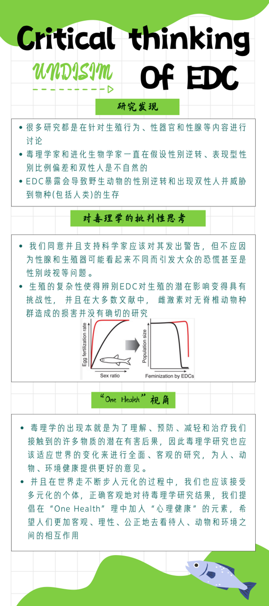
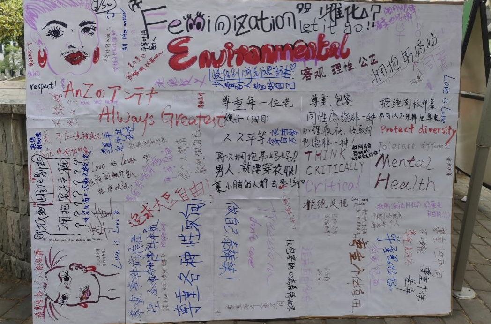
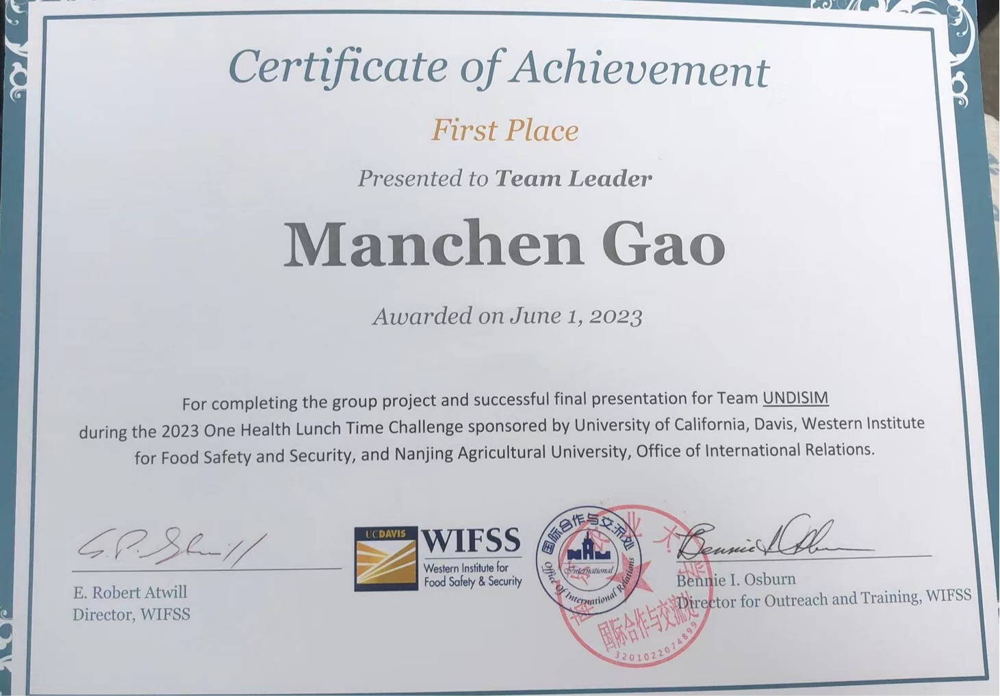

Team leader, UNDISIM · UC Davis (WIFSS) & Nanjing Agricultural University · concluded June 1, 2023

Reporting on "environmental estrogen" (endocrine-disrupting chemicals, or EDCs, linked to hormonal effects) had been rising for years, usually alongside a specific, loaded claim: that exposure was "feminizing" men. Our starting observation was that the underlying toxicology research itself was part of the problem. Study after study, we found, narrowed its scope almost entirely to gonads, fertility, and reproduction, extrapolating broad conclusions from a narrow set of endpoints rather than building evidence from real-world, wild-population observation.
That narrow framing, we argued, does double damage: it limits the scientific value of the research itself, and it feeds exactly the kind of decontextualized public panic that shows up as soy-milk "feminization" scares, jokes about "chemical castration," and mockery of men perceived as insufficiently masculine.
Partway into the literature review, we found a paper that had already made our exact argument at the academic level: "What's Gender Got to Do with It? Dismantling the Human Hierarchies in Evolutionary Biology and Environmental Toxicology for Scientific and Social Progress," by Dr. Melina Packer. Rather than just cite it, we emailed her with questions, then held a live video call on May 19, 2023, to talk through the state of estrogen-toxicology research and how it connects to mental health under a One Health framing.
It's a small move that changed the shape of the project: instead of arguing from the outside as students, we were now working from a conversation with someone who had made the same case from inside the field.

We didn't stop at research. We ran a public survey on estrogen and gender equality, just over 100 responses, mostly 19–23-year-old students, to check what people actually believed versus what the science said.

Most people's mental model of "estrogen effects" turned out to be folk association (obesity, feminization, tumors) rather than anything biologically accurate. So we built the rest of our outreach around closing that gap: public-education articles on WeChat and QQ Zone, and two science-communication videos on Bilibili (the first opens with deliberately alarming hooks about EDCs before walking the topic back to a measured view; the second lays out our actual conclusions).
The centerpiece was an in-person event at Nanjing Agricultural University: an educational poster ("Critical Thinking of EDC") next to a public message board, inviting anyone walking past to write down what they thought about gender, "feminization," or anything related. It filled up fast, in Chinese, English, even some Japanese, with things like "Protect diversity," "Think critically," and "Love is Love."



We folded everything (the literature critique, the call with Dr. Packer, the survey data, the outreach results) into a final presentation built around four moves: lay out the social phenomenon, show how narrow the existing research really is, address the public misunderstanding directly, and connect it all back to "mental One Health." Our closing argument: a genuinely multidisciplinary One Health approach has to fold in the diversity of human society, of species, and of environments, treating an inclusive, open mindset as itself part of health, not separate from it.
We won First Place in the 2023 One Health Lunch Time Challenge, co-sponsored by UC Davis's Western Institute for Food Safety and Security and Nanjing Agricultural University. The certificate was issued to me, "Team Leader Manchen Gao," for completing the project and its final presentation, co-signed by WIFSS's director and its director for outreach and training.
Un-do the bias. Dis-mantle the myth.
UNDISIM: a name built from three negating prefixes, chosen on purpose.